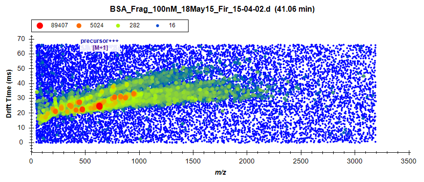
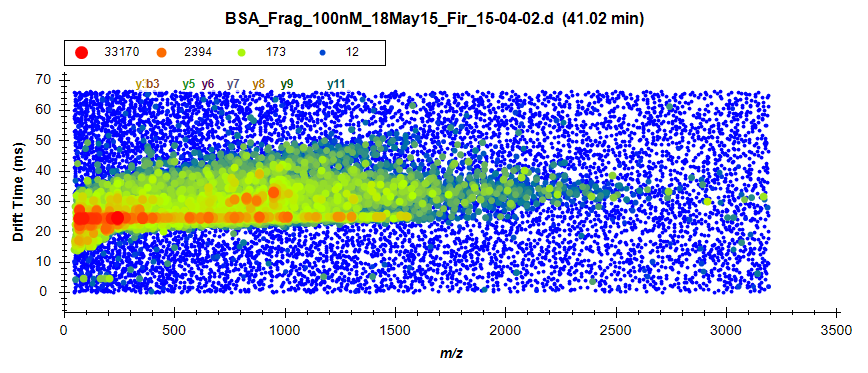
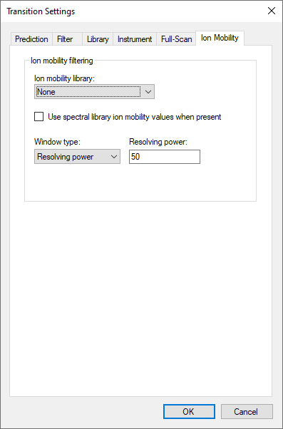
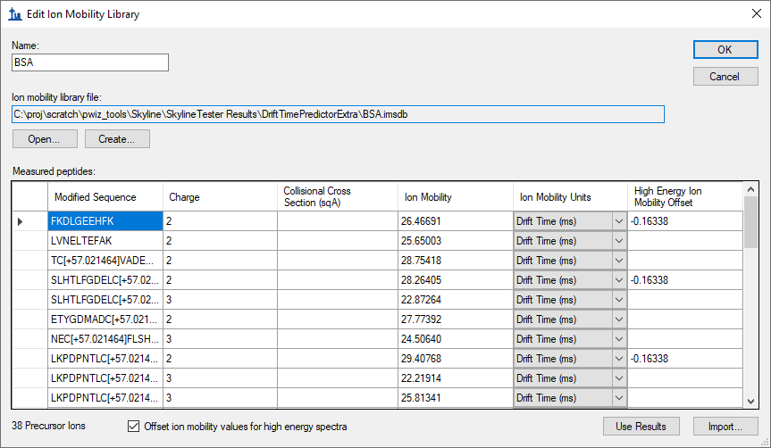
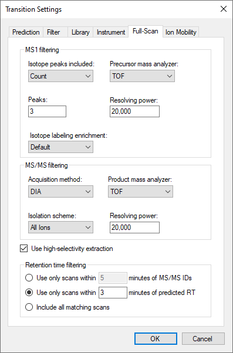
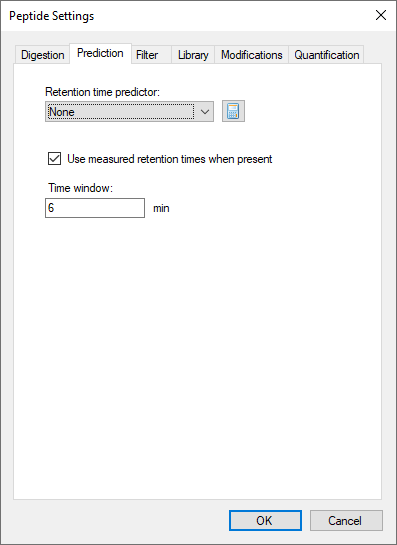
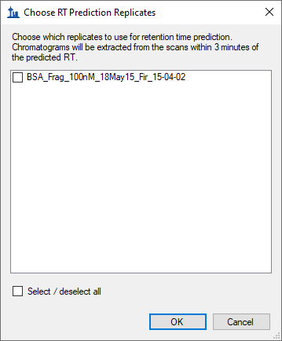
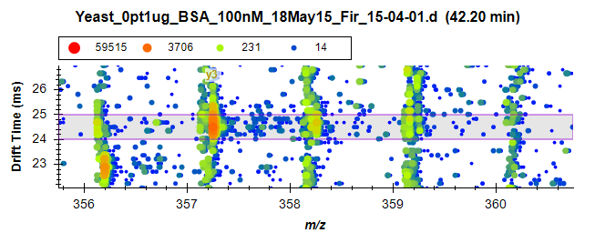

In this tutorial, you will learn how data from a simple mixture can be used to create ion mobility libraries for use in ion mobility separation (IMS) with more complex samples. By first training with a simple data set, in this case bovine serum albumin (BSA) spiked into water, ion mobility and collision cross section values can be added to a Skyline document. The stored ion mobility for a given precursor can be used to increase the selectivity of precursor and fragment extracted ion chromatograms above what can be realized by high mass resolution alone, thereby reducing interference from other ions.
In this more advanced tutorial, some familiarity with Skyline is assumed. If you are not familiar with Skyline, you should first work through some of the introductory tutorials at
http://skyline.ms/tutorials.url
To start this tutorial, download the ZIP file at:
http://skyline.ms/tutorials/IMSFiltering.zip
Extract the files in it to a folder on your computer, like:
C:\Users\bspratt\Documents
This will create a new folder:
C:\Users\bspratt\Documents\IMSFiltering
This folder will contain the Skyline files necessary for this tutorial. In addition to these files, you will need to download two Agilent mass spec raw data files from the following links:
http://skyline.ms/tutorials/data-drift/BSA_Frag_100nM_18May15_Fir_15-04-02.d.zip
http://skyline.ms/tutorials/data-drift/Yeast_0pt1ug_BSA_100nM_18May15_Fir_15-04-01.d.zip
This is a total of nearly 5GB of data, so download may take a while. Once downloaded, unzip the .d files to your previously created “Documents\IMSFiltering“ folder so that it contains subfolders named BSA_Frag_100nM_18May15_Fir_15-04-02.d and Yeast_0pt1ug_BSA_50nM_18May15_Fir_15-04-01.d. Note that while these are referred to as files in this tutorial, they are technically folders.
The file BSA_Frag_100nM_18May15_Fir_15-04-02.d contains the raw data from a tryptic digest of BSA standard mix in water, which should make a clean training set for BSA peptide drift times. The file Yeast_0pt1ug_BSA_100nM_18May15_Fir_15-04-01.d contains the raw data from a sample of the BSA standard mix and spiked into a yeast cell lysate background.
Both files contain ion mobility information. In this example, ion mobility is expressed in terms of drift time but the concepts can be generalized to other ion mobility types such as inverse reduced ion mobility.
Also note that while this tutorial is in terms of peptides, like most things in Skyline these principles are equally applicable to small molecule targets.
If you are not already running Skyline, start it now.
The document has no mass spec results loaded yet, and looks like this:
This document is the result of importing a peptide search that included a BSA digest. It is set up for full gradient chromatogram extraction and at this point does not have any Ion Mobility information. It is probably worth reviewing the transition settings:
The Full-Scan tab is especially worth reviewing any time you are importing non-SRM data, and it should look like this:

This instructs Skyline to extract 3 precursor isotope peaks from MS1 (low-energy) spectra and fragment ions from MS/MS (high energy) spectra acquired at 20,000 resolving power on a TOF instrument. The acquisition method “DIA” and isolation scheme “All Ions” are what tell Skyline the spectra will be alternating low- and high-energy without precursor isolation. When Use high-selectivity extraction is checked, Skyline extracts a single resolution width around the target m/z, and when it is unchecked Skyline extracts 2x the resolution width, which should increase the total number of ions included in the extraction at the risk increasing interference.
Finally, the Include all matching scans option tells Skyline to extract full-gradient chromatograms, which is not usually desirable, but in both the retention time and drift time dimensions we do not yet have enough information to narrow the range we want to consider for the target ions. But, with one of the samples being a BSA standard mix injected into water, you can be reasonably sure of finding the ions of interest and training Skyline to restrict the range of consideration in a more complex sample. If the initial spectral library document was created under the same chromatographic conditions as the ion mobility data sets, the retention time can be included.
In this section, you will import both the training data and the mixture data. Initially, this is just to look at the mixture data to see the impact of interference among the targeted peptides and the yeast background in the mix. We will load the training and mixture data simultaneously just to save time, since Skyline can load the two in parallel.
Which should bring up the Import Results form:

The Import Results Files form should appear as below, showing the .d files you have extracted into the tutorial folder:

This should start the import and cause Skyline to show the Importing Results progress form:

Once the files are imported, you can examine the mixture alongside the simple data set and compare the amount of interference you can see in each.
Already, it is easy to see that even though both samples had the BSA standard mix injected at the same concentration, the sample with the yeast background shows more evidence of interference, with more peaks at other retention times than the obvious one that Skyline chose. Also, the y8 ion appears more intense in the yeast background sample:

The difference is even more pronounced, if you view the entire gradient range by doing the following:

Since there are only 38 peptide precursors in this document, you may want to review all 38 to get an overall feel for how the extracted ion chromatograms differ between the two, maybe even both zoomed to the best peak and then quickly with the chromatogram graphs un-zoomed. Before starting this review, do the following:
You should end up with a layout that looks something like this:

This will help make it obvious how the retention times in the two replicates compare with each other. As you review, you should become accustomed to seeing the peptides in the yeast sample eluting about 1 minute later than they elute in the water sample. When this is not the case, there is usually something worth looking at. There are four noteworthy cases in this document, two near the top and two near the bottom. See if you can find them all.
When you find a case where the time do not match the expected pattern of yeast eluting 1 minute later than water, you can do the following:
The most extreme case you will find is the third peptide TCVADESHAGCEK where Skyline picks a peak at 3.3 minutes in water and 70 minutes in yeast. When you zoom to 3 minutes in yeast, you will find that there is really nothing there for Skyline to pick, and this earliest eluting peptide was lost in the chromatography for the yeast sample.
Make a note of this for your future processing. It turns out this peptide was lost in all of the yeast samples in the dilution series you are working with.
The form should look like this:

The sixth peptide (seventh precursor) NECFLSHKDDSPDLPK is the other problem peptide near the top of the Targets list. If you watch the apex lines closely in the Retention Times plot, you will notice that the peak Skyline picked elutes earlier in yeast than water. Or, in the chromatogram plots, you will see that the peak lacks a convincing precursor peak.
To better understand what is going on here, it Is time to introduce the new ion mobility dimension in this data, which we have so far ignored. To do that, you need to look at the underlying spectra from which these chromatograms were extracted, by doing the following:
This should bring up the Full-Scan view showing a normal two-dimensional spectrum in profile mode:
 to change the plot to a 3D spectrum with drift time.
to change the plot to a 3D spectrum with drift time.
You can see that only one peptide precursor is visible in this plot at 634.6 m/z and 25 ms drift time.

This is a typical MS1 spectrum for IM-MS data, with separate distributions of ions showing correlation between m/z and drift time for separate charge states. A higher slope in the distribution indicates a lower charge state. You can convince yourself of this using the plot navigation features available in all Skyline graphs.
You will see that features in the upper distribution have isotopes separated by 1 m/z, while It is possible to find charge 4 and even 5 ions in this spectrum.
To inspect a relevant MS/MS spectrum do the following:
The Full-Scan graph should change to look like this:
You can see the most intense visible ion is also at 25 msec, consistent with its precursor, with 1 m/z isotope spacing, consistent with the expectation of a singly-charge y8 ion. but even in water there are probably at least 2 other ions visible at 30 and 40 ms contributing to the extracted intensity. The singly charged ion at 40 ms appears to line up very closely with the ion of interest, and might be the same y8 ion contributed by a lower charge state of the peptide. The ion at 30 ms, however, may have a lighter monoisotopic peak and with 0.5 m/z isotopic spacing is clearly at doubly charged fragment ion.

This is also a typical MS/MS spectrum, where you can imagine each horizontal stripe as a top-down view of a normal 2D spectrum. You can also see some remaining evidence of the charge 1 distribution you saw in the MS1 spectrum. This early implementation of the Agilent IMS instrument required a constant collision energy, and one was chosen to fragment charge 2 and 3 ions best. In general, you can interpret horizontal distributions of ions as fragments and diagonal distributions as left-over poorly fragmented precursors.
Clearly there is a lot more going on in this 3D space than just the signal you want extracted at 25 ms drift time. Take a moment to click on other points in both the water and yeast chromatograms, including the interferences to the left of the peak of interest. You will see how much more complicated these spectra are in the yeast sample and more evidence of the peptide at 30 ms drift time.
It should be clear now that the selectivity of chromatogram extraction in MS/MS and even MS1 can be made more selective, reducing the risk of interference from ions being targeted, by extracting from only a limited drift time range around the drift time at which the ion is expected. Like other aspects of targeted extraction, the highest confidence and selectivity is achieved when retention times and drift times as well as preferential fragment ions are known from a prior measurement and stored in libraries.
Though not described in this document, it is possible to process “All Ions” data sets which contain MS/MS fragment data with the latest version of Spectrum Mill (or PLGS for Waters data sets) with the result that the peptide spectrum matching results already are annotated with drift time and in the case of Agilent data sets, if the data file previously had a Single Field calibration applied, then also with collision cross sections.
In this tutorial, however, we will use the most broadly applicable approach of learning the drift times and collision cross section (if the data files have been Single Field calibrated) directly from the BSA standard sample and then applying it to more complex data. This is accomplished via the Use Results button in the Edit Ion Mobility Library dialog.
To create the ion mobility library for this tutorial, first remove the yeast data by doing the following:
And then create the library by doing the following:

This starts the training process, which enumerates each peptide precursor loading the apex MS1 and MS/MS spectra just as you did manually for the charge 3 precursor of the peptide NECFLSHKDDSPDLPK. Skyline then determines the resolution width drift time range that would produce the maximum signal in the MS1 spectrum for the targeted m/z ranges. It then does the same for MS/MS and records any small shift that may separate the MS1 and MS/MS signal.
If the file contains calibration values then the library entries are recorded with a collisional cross section derived from the observed ion mobility peaks. This CCS information can later be used with other independently calibrated data files to determine the appropriate ion mobility value for filtering purposes.
When the training is complete, the form should look like this:

Note that the peptide NECFLSHKDDSPDLPK you have been looking at was found to yield peak intensity at 24.5064 ms, about where you would expect from the 3D spectrum plots you have examined.
Note also that the CCS column is left empty. If these data files contained calibration values, then the CCS value would have been be calculated and stored as well, allowing for calibrated drift time extraction in all results data sets. In this case, these particular files do not support CCS calibration (most do, you are unlikely to encounter this with your own ion mobility data). In this case, you will have to rely on drift time consistency between runs, which works without issue in this example.
Make sure your new library is selected in the Transition Settings – Ion Mobility tab. The form should look like this:
Before reimporting the yeast sample data do the following to also limit the retention time ranges for chromatogram extraction:
The form should look like this:

Before reimporting the raw data, open the Peptide Settings – Prediction tab and make sure that that Use measured retention times when present is checked and the Time window field is set to “6” minutes.
The form should look like this:

Note that in this example we are working with MS/MS data, but it is also possible to import MS1 only ion mobility data files. In this case drift times or collisional cross section will still be used to apply a filter to MS1 spectra. Not included will be the delta drift times for fragments. With the increased signal intensity associated with MS1 data and the increased selectivity afforded by ion mobility, workflows that are focused on quantitative results may consider forgoing the inclusion of fragmentation when using ion mobility.
To reimport the yeast data, do the following:
This should bring up the following form, letting you know that retentions from existing replicates will be used in the requested chromatogram extraction and allowing you to choose which replicates:

Chromatogram extraction will begin again and you may be able to tell even just by watching the progress graph that less signal is being extracted. If you left the NECFLSHKDDSPDLPK peptide selected you will see the difference immediately:
To better understand what happened, do the following:
The Full-Scan graph should look something like this:

You can now see the horizontal violet range showing the filter imposed by filtering with the ion mobility library you trained. Signal outside this range is now ignored by Skyline. You can also see a very light “y3” annotation just under the legend showing the location of the m/z range used to extract the chromatogram point you clicked on.
A great deal of interference has been removed from the chromatograms, and Skyline has picked the correct peak a little more than 1 minute after the peak from the water data. If you review all the peptides the picked peaks for all but the missing peptide TCVADESHAGCEK, but your note should still be there to remind you, denoted by a red triangle in the upper-right corner of the element in the Targets view.
You may have noticed some discrepancies, however, in the relative ion abundances shown in the Peak Areas plots or the dominant peak in the chromatogram plots. And, there are now peptides where interference is more obvious in the water sample than the yeast, for example the fragment ions of the first peptide in the document FKDLGEEHFK:
Interference that coelutes as nicely some of the chromatograms in this file could easily be coming from other charge states of the same precursor. They will have the same elution profile and may produce the same fragment ions. But, different charge states of the same peptide molecule will have different ion mobility. Even in this simple mix of BSA in water, there is also obviously interference from other potentially modified peptide forms.
To improve consistency between the extracted ion chromatograms of the two samples, you can now reimport the water data by doing the following:
Skyline should show the import progress form, and when the file has been reimported, you should see the chromatograms in the water sample shortened to just 6 minutes, like for yeast, and greater agreement between the two samples with greatly reduced interference in both from the original import in this tutorial.
In this tutorial, you have learned how to work in Skyline with mass spectrometry data with an ion mobility separation. You now understand the settings required for chromatogram extraction from this data. You have learned to interpret the alternating MS1 and MS/MS three-dimensional spectra produced by an ion mobility enabled mass spectrometer. You can now train an ion mobility library from a simplified sample for use in a more complex sample and use that library to enhance the selectivity of chromatograms extracted by Skyline. With the interactive plots in Skyline, you can now navigate and understand this highly dimensional data and you will be able to use it to improve your quantitative measurements of target ions.